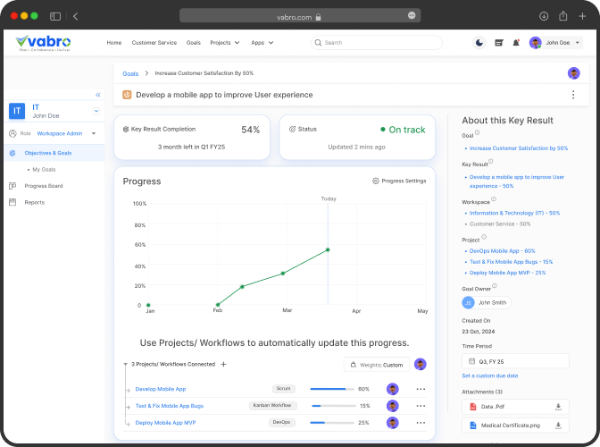

Supports 13+ Solutions for All Work Across Your Company
Struggling with disorganized workflows? With over 1,500 ready-to-use templates, Vabro streamlines every department and offers solutions for all the work across your company.
Struggling with disorganized workflows? With over 1,500 ready-to-use templates, Vabro streamlines every department and offers solutions for all the work across your company.
Struggling to align team efforts with business goals due to unclear objectives and inconsistent tracking? Vabro's OKR feature enables organizations to set, track, and align measurable objectives and key results, fostering transparency, accountability, and seamless collaboration at every level. Unlike other tools that lack integration and strategic alignment, Vabro ensures that every team's efforts directly contribute to achieving overall business goals.
Establish and manage your organization's structure, settings, and operations seamlessly.
Manage workspaces, invite team members, and customize settings for seamless collaboration.
Play a pivotal role across projects, workflows, and DevOps. Set up projects, prioritize user stories, and review completed work.
Create teams, plan and manage sprints, and ensure Scrum ceremonies run smoothly.
Oversee Kanban Boards and Backlogs to ensure smooth and organized workflows. Kanban Managers can set WIP limits, adjust board settings, and optionally review completed task groups and tasks.

Active participants in Scrum, Kanban, and DevOps. Collaborate and execute tasks directly from the boards, contributing to project and workflow success.
Tired of inconsistent project execution and delayed deliveries due to a lack of structured Sprint and Release management? With Scrum, Vabro streamlines project execution through iterative processes and well-defined Sprints, fostering collaboration and ensuring on-time delivery. Unlike other tools with limited or no Agile support, Vabro provides a comprehensive framework tailored for optimal team performance and project success.
Are inefficiencies and a lack of clarity in managing team workflows slowing you down due to rigid or limited task management tools? Vabro streamlines workflows with fully customizable Kanban Boards and 1500+ pre-defined templates, offering real-time visibility, continuous task tracking, and seamless work progression across teams. Unlike other platforms with static boards and restricted adaptability, Vabro's flexible Kanban Boards ensure efficient workflow management tailored to your team's needs.
Are development delays, workflow bottlenecks, and communication breakdowns affecting your project timelines? Vabro's DevOps functionality bridges the gap between development and operations by streamlining task prioritization, automating processes, and enabling real-time collaboration. This results in faster deployments and fewer errors. Unlike other tools that lack integrated solutions, Vabro ensures continuous coordination and error-free project delivery.

Struggling to align team efforts with business goals due to unclear objectives and inconsistent tracking? Vabro's OKR feature enables organizations to set, track, and align measurable objectives and key results, fostering transparency, accountability, and seamless collaboration at every level. Unlike other tools that lack integration and strategic alignment, Vabro ensures every team's efforts directly contribute to overall business success.
Are your teams unsure of which tasks to prioritize or struggling to stay focused? With Vabro, streamline product development by maintaining a fully...more
Are your teams unsure of which tasks to prioritize or struggling to stay focused? With Vabro, streamline product development by maintaining a fully prioritized backlog that aligns with your team's goals and stakeholder needs. Unlike other tools that lack real-time prioritization, Vabro enables efficient management of user stories with a dynamic, prioritized product backlog. Less
Is your team struggling to visualize tasks or optimize workflows? With Vabro's Kanban backlog, enhance task visibility and streamline workflow management, ensuring seamless transitions between...more
Is your team struggling to visualize tasks or optimize workflows? With Vabro's Kanban backlog, enhance task visibility and streamline workflow management, ensuring seamless transitions between stages. Unlike other tools with unclear navigation and inefficient task movement, Vabro provides a fully integrated Kanban backlog for efficient task and workflow management. Less
Frustrated with complex Kanban boards that hinder task management? Simplify your workflow with Vabro's intuitive Kanban board, where tasks...more
Frustrated with complex Kanban boards that hinder task management? Simplify your workflow with Vabro's intuitive Kanban board, where tasks, progress, and team collaboration are clearly visualized for optimal efficiency. Unlike other tools, Vabro offers an easy-to-use, clutter-free Kanban board to enhance productivity.Less
Ever struggled to map larger requirements? Vabro helps organize large-scale features into manageable Epics, giving the Product Owner a clear view of high-level requirements and enabling the...more
Struggling to manage larger requirements? Vabro simplifies organization by structuring large-scale features into manageable epics, providing product owners with a clear high-level view. Easily break down epics into user stories for seamless, incremental value delivery. Less
Ever struggled to define clear, actionable tasks? Vabro simplifies complex requirements by breaking them down into concise user stories, ensuring teams have well-defined tasks to deliver value in manageable increments.
Are your teams struggling to prioritize tasks that drive business objectives? Vabro's structured OKR approach breaks down goals into key results and links them to projects with tailored...more
Are your teams struggling to prioritize tasks that drive business objectives? Vabro's structured OKR approach breaks down goals into key results and links them to projects with tailored weightage, ensuring clear, measurable outcomes. Unlike other tools, Vabro seamlessly integrates OKRs without added costs or complexity, keeping teams aligned and focused on achieving their goals. Less
Vabro's Sprint management enables focused, efficient iterations, helping teams meet deadlines and deliver high-quality product increments.
Tired of cluttered Scrum boards that make task tracking difficult? Stay organized with Vabro's streamlined Scrum board, where tasks, progress, and team collaboration are clearly...more
Tired of cluttered Scrum boards that make task tracking difficult? Stay organized with Vabro's streamlined Scrum board, where tasks, progress, and team collaboration are clearly visualized for maximum efficiency. Unlike other tools, Vabro offers a simple, user-friendly Scrum board for seamless management. Less
Facilitate seamless collaboration between development and operations teams with Vabro's DevOps features, enabling faster and more reliable releases.
Often struggle to maintain a clear overview of high-level project goals and progress? Gain complete visibility by tracking Epics in Vabro.
With visual summaries like charts and Epic breakdowns, easily identify progress gaps and ensure alignment with strategic objectives.
Filter and visualize grouped tasks across teams or categories with Vabro's organized task display, helping you identify bottlenecks within related activities.
Struggling to assess team performance during a Sprint? Analyze Sprint success by tracking created and completed tasks over time. Vabro's real-time charts provide insights into task velocity, helping teams improve efficiency.
Monitor completed work against the total scope to gain clear insights into Sprint progress and ensure timely completion.
Struggling to get a clear picture of release readiness? Vabro provides a comprehensive overview of deliverables, clearly distinguishing completed tasks from pending ones.
Struggling to track how long tasks take at each workflow stage? Measure task progress from 'To Do' to 'Complete' with Vabro's detailed tracking, helping you optimize workflows and improve cycle efficiency.
Struggling to identify bottlenecks or imbalances in your workflow? Vabro's Cumulative Flow Diagram provides a clear visualization of workflow stages and task distribution over time, helping you optimize efficiency.
Align team efforts with organizational goals by tracking OKRs. With Vabro's advanced filtering, easily monitor key objectives and measure contributions effectively.
Want to stay on top of your progress in a Project or Workflow? Vabro helps you track personal contributions, monitor Task statuses, and analyze progress trends—empowering you to manage your workload efficiently and meet deadlines with ease.
Struggling to track the status of each User Story? Vabro helps teams visualize and monitor progress with a comprehensive User Story Report, ensuring full transparency and alignment.
Need to track your Task progress? Use Vabro's Task summary graphs and status filters to easily view completed, pending, or in-progress tasks, ensuring your Workflow stays on track.
Struggling to track your team's real-time progress toward Sprint goals? Vabro's visual progress tracking helps teams monitor remaining work over time, stay on track, and adjust efforts for successful Sprint completion.
Evaluate the average work completed in each Sprint to forecast performance and enhance planning accuracy.
Ever struggled to identify workflow delays and track how long tasks take from creation to completion? Vabro provides a detailed view, helping you pinpoint bottlenecks and optimize efficiency.
Track task timelines from creation to completion to identify trends, highlight bottlenecks, and take actionable steps to optimize workflows. Ensure tasks move seamlessly through the Kanban board with Vabro's detailed insights.
Struggling to measure team productivity over time? Vabro's Throughput Report tracks completed tasks within a specific timeframe, helping you assess performance and enhance delivery speed.
Track ongoing tasks to identify bottlenecks and ensure a smooth, efficient workflow.
Having trouble tracking tasks from form submissions? Vabro automates the process by organizing responses, analyzing data, and converting them into actionable tasks—ensuring faster, data-driven decisions.
Do you struggle to visualize your work and keep track of project progress? Vabro makes it effortless with a variety
of views, so you can manage your tasks with ease.
Are detailed tasks getting lost in the shuffle? Vabro's List View organizes work in a clear,
structured format, making it easy to navigate and prioritize what matters most.
Having trouble keeping up with deadlines? Vabro's Calendar View provides a clear
overview of all schedules and due dates, ensuring nothing slips through the cracks.
Unable to track Workflow efficiently? Track and visualize Workflows with Kanban Boards for
streamlined Task management.
Finding it difficult to map dependencies or track project flow? Vabro's Timeline View provides a clear,
intuitive way to visualize progress and dependencies, keeping your projects on track.
Vabro offers hundreds of customizable features to suit any Project or Workflow under one platform. Please check them below.
 Cycle Time Report
Cycle Time Report
 DevOps
DevOps
 Kanban Board
Kanban Board
 List View
List View